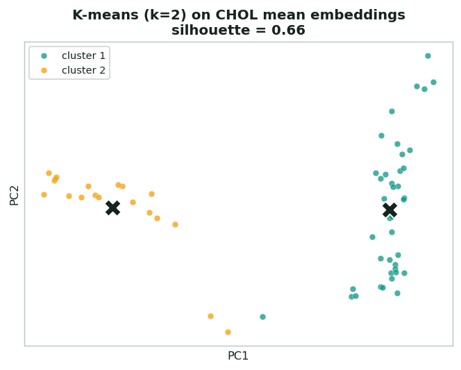
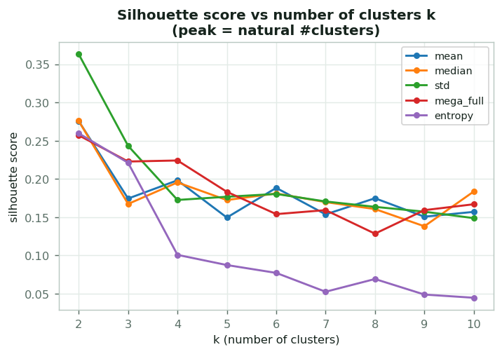
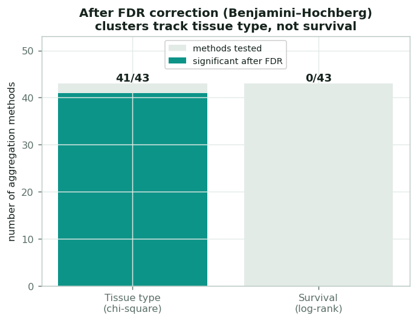

Clustering & statistics, explained
Beyond supervised prediction, the project asks an unsupervised question: do the slide embeddings naturally group, and do those groups mean anything? That takes two layers: clustering to find the groups, and statistics to test whether they're real and what they relate to. This page explains both, with the project's actual clustering results.
Clustering: finding structure without labels
Clustering is unsupervised: it groups slides by similarity in embedding space without ever seeing a label. If tumors of different biology look different to the foundation model, they should fall into different clusters on their own.
Partition into k groups by nearest center
K-means picks k cluster centers and assigns each slide to the nearest one, then iterates until the centers settle. It's fast and intuitive, but you have to choose k up front. Here it's run on the PCA-reduced embeddings (after the same StandardScaler → PCA step the models use).


Letting the data choose k
The silhouette score measures how tight and well-separated clusters are (−1 to +1; higher is better). Computing it for a range of k and taking the peak gives a data-driven number of clusters. Across the project's aggregation methods the peak is almost always k = 2: the embeddings split most naturally into two groups.
Hierarchical clustering is also run as a cross-check: instead of fixing k, it builds a tree by repeatedly merging the closest groups, which you can cut at any level. The two methods agree closely here.
Statistics: are the groups meaningful?
Finding clusters is easy; proving they mean something requires statistical tests, and being honest about testing many things at once.
Association tests
- Chi-square test: do the clusters line up with a known label (e.g. tumor vs normal)? A small p-value means the cluster split and the label are not independent.
- Log-rank test: do the clusters have different survival? This is the same test used for the Kaplan–Meier curves elsewhere on the site (see the survival page).
Multiple testing & FDR
The project tested ~44 aggregation methods × 2 clustering methods × 2 tests, well over a hundred p-values. At a 0.05 threshold, you'd expect several "significant" hits by chance alone. The fix is False Discovery Rate (FDR) correction (Benjamini–Hochberg), which adjusts every p-value to control the share of false positives among the hits you report, so the few you keep are far more likely to be genuine.
The result is striking and honest: after FDR, clusters are significantly associated with tissue type in nearly every method, but with survival in none: the unsupervised structure reflects what the tissue is, not how the patient fared.

Permutation test & bootstrap CI

Two more tools used throughout the project:
- Permutation test: shuffle the labels many times and re-run the whole pipeline to build a "null" distribution of scores you'd get by chance. The empirical p-value is how often chance beats the real score. This is how the AUC = 0.80 grade finding was validated (0/200 shuffles beat it → p = 0.005).
- Bootstrap confidence interval: resample the data with replacement 1,000× and recompute the metric to get an honest 95% CI, a range the true value plausibly falls in. This is how every survival C-index on the site carries its uncertainty.
What the clustering told us
Full per-method clustering numbers (optimal k, silhouette, variance explained) live in
results/clustering_results/all_results.json; the FDR-corrected test table is
results/statistical_tests/fdr_corrected_results.csv.